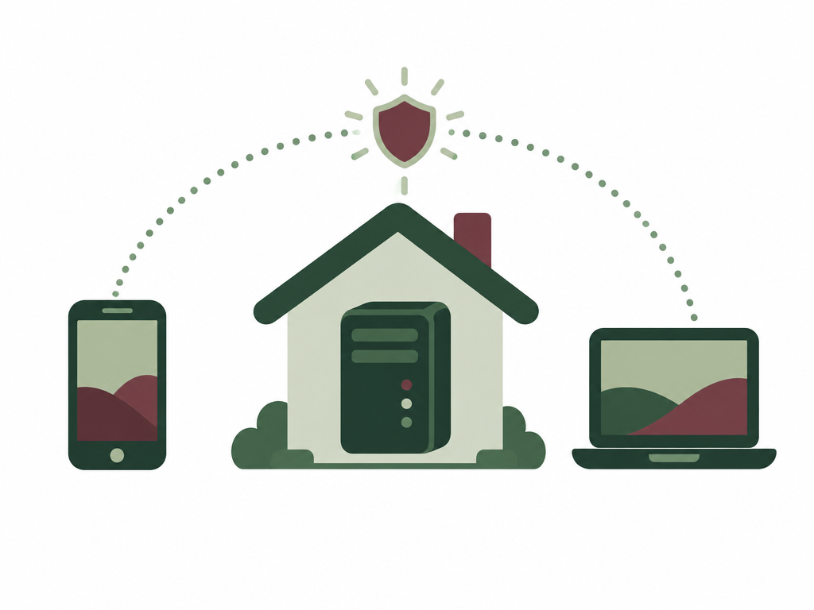

Step 1 — Install WSL or Linux
Immich runs on Linux, so before anything else we need a Linux system. There are two ways to get one, and it's worth being honest about which is better.
The recommended path: wipe the machine and install Linux. A system wipe is always a good idea when you're turning a computer into a server. You start from a clean slate instead of inheriting years of clutter, leftover apps and background processes — and, more importantly, Linux runs better. It has far less overhead, Docker runs natively on it, and it's exactly the environment Immich's own documentation is written for. For a machine that's going to sit there running 24/7, a fresh install of Ubuntu Server or Debian is the best foundation you can give it. Back up anything you care about first.
The other path: WSL. If you'd rather not wipe — say it's your only computer, or you still need Windows day to day — then WSL is possible as well. WSL2 runs a real Linux kernel inside Windows, so Immich and Docker work on it perfectly well. The trade-offs are small but real: it's a layer running on top of Windows rather than the real thing, so it's a touch slower and heavier, and a few things — opening ports to the outside world, and starting automatically when the machine boots — need extra configuring. It works; it just takes more fiddling.
Our advice: if the computer is going to be a dedicated server, wipe it and install Linux — it'll be simpler and faster from here on. If it has to stay a Windows machine, WSL2 is a perfectly good home for Immich.
Once Linux is up, note its IP address (run ip a, or check your router) — you'll need it in Step 4.
Step 2 — Install Docker
Immich runs inside containers, so Docker comes next. On Linux — and inside your WSL terminal, which behaves the same way — the official script is one line:
curl -fsSL https://get.docker.com | shStep 3 — Downloading and configure the files
Make a folder to keep everything tidy, then pull Immich's setup files from its latest release:
mkdir immich-app && cd immich-app
wget -O docker-compose.yml https://github.com/immich-app/immich/releases/latest/download/docker-compose.yml
wget -O .env https://github.com/immich-app/immich/releases/latest/download/example.envOpen the .env file and set three values:
- UPLOAD_LOCATION — the folder where your photos should be stored (point it at your big drive).
- DB_PASSWORD — any password, letters and numbers only.
- TZ — your timezone, e.g.
Europe/Amsterdam.
That's the only configuration you have to touch.
Step 4 — Start it and log in
From the same folder, bring it up:
docker compose up -dThe first run downloads its images — give it a minute or two. Then open your browser and go to http://YOUR-SERVER-IP:2283, and create your admin account. That's your photo cloud, live.
Step 5 — Tailscale or a reverse proxy
Right now Immich only answers on your own network — you can reach it from home, but not from anywhere else, and the phone app won't sync until you fix that. Two routes get you out, and the first one is by far the least work.
- Tailscale — start here. The easiest option by a distance. Install Tailscale on the server and on your phone and laptop, sign in to the same account on all of them, and they join one private network. Your server gets a stable address that works from anywhere — on the train, at a friend's house — while nothing is exposed to the internet and no ports are opened on your router. For most people this is the whole answer, and it takes about five minutes.
- A reverse proxy: Caddy or Nginx. The "proper" way if you want a real domain name and proper HTTPS. You put a proxy in front of Immich and it handles the certificate and forwards traffic inward. Caddy is the beginner-friendly one — it gets HTTPS certificates automatically with almost no configuration. Nginx gives you more control and more knobs, which also means more to configure. Either way you keep ownership of everything, but you do need to forward ports 80 and 443 on your router so the internet can reach the proxy.
- Cloudflare. Two flavours, same idea. You can put Cloudflare in front of your Caddy or Nginx setup as DNS and proxy, adding caching and a layer of protection. Or skip the open ports entirely with a Cloudflare Tunnel: a small agent on your server makes an outbound connection to Cloudflare's edge, which then serves your site over HTTPS on your domain — nothing inbound is exposed. The trade-off is that your traffic passes through Cloudflare, so it's worth adding Cloudflare Access if you want a login wall in front of it too.

Step 6 — Have fun!
That's the hard part done. Install the Immich app on your phone, point it at your server, switch on backup — and then just go take some photos. They'll upload themselves in the background, and your library is yours from now on. If something does break, the docs and the community have seen it before, so it's rarely more than a search away.
Want to go deeper? This page is the short version on purpose. The full guide — every option, every setting, and troubleshooting — lives in the repo: github.com/immich-app/immich and the docs at immich.app/docs.